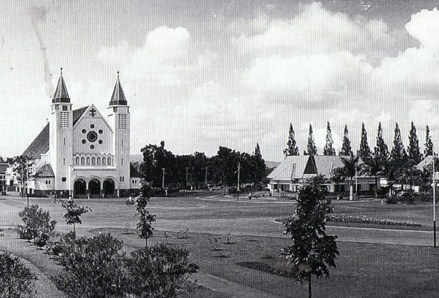
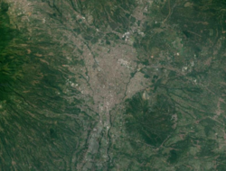
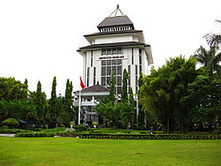

Kota Malang (diucapkan [malaŋ], osob kiwalan: ngalam) adalah sebuah kota yang
terletak
di Provinsi Jawa Timur, Indonesia, kota terbesar kedua di Jawa Timur setelah Surabaya,
dan kota terbesar ke-12 di Indonesia. Kota ini didirikan pada masa Kerajaan Kanjuruhan
dan terletak di dataran tinggi seluas 145,28 km2 yang terletak di tengah-tengah Kabupaten
Malang. Bersama dengan Kota Batu dan Kabupaten Malang, Kota Malang merupakan bagian
dari kesatuan wilayah yang dikenal dengan Malang Raya.
Kota Malang dikenal baik karena dicap sebagai kota pendidikan. Kota ini memiliki
berbagai perguruan tinggi terbaik seperti Universitas Brawijaya, Universitas Negeri
Malang, UIN Maulana Malik Ibrahim Malang, dan Politeknik Negeri Malang. Selain itu,
kota ini merupakan kota pariwisata karena alamnya yang menawan yang dikelilingi oleh
pegunungan serta udaranya yang sejuk. Malang pun terkenal sebagai kota bunga karena
banyaknya bunga yang menghiasi kota. Kota Malang juga merupakan kota seni karena
banyaknya kesenian khas dari kota ini, mulai dari tarian hingga pertunjukan.
Kota Malang memiliki berbagai macam orang dari berbagai macam suku bangsa dan
budaya.
Penduduk kota Malang mencapai 895.387 jiwa dengan suku mayoritas Jawa, diikuti dengan
Madura. Wilayah Metropolitan Malang (Malang Raya) merupakan kawasan metropolitan terbesar
kedua di Jawa Timur setelah Gerbangkertosusila. Jika dilihat dari sisi budaya, Kota Malang
termasuk ke dalam Kawasan Kebudayaan Arek.
Sejarah

Sebagai daerah yang berjaya sejak zaman dahulu, Kota Malang sudah mengalami
beberapa kali
pergantian pemerintah. Pada Abad ke-8 M, Malang menjadi ibu kota Kerajaan Kanjuruhan dengan
rajanya, yaitu Gajayana. Setelah Belanda masuk, pemerintah memusatkan kedudukannya di sekitar
Kali Brantas. Pada 1824, Malang mulai mempunyai asisten residen karena sudah menjadi afdeling
dan ditetapkan sebagai kotapraja (stadsgemeente) pada 1914. Malang menjadi bagian Republik
Indonesia pada 21 September 1945 dan dimasuki kembali pada 2 Maret 1947 setelah diduduki kembali
oleh Belanda. Pemerintah diubah menjadi Pemerintah Kota Malang pada 1 Januari 2001.
Geografi

Kota Malang terletak di tengah-tengah Kabupaten Malang dan sisi selatan Pulau
Jawa.
Kota ini memiliki luas sebesar 145,28 km2. Kota ini dibatasi oleh Kecamatan Singosari
dan Kecamatan Karangploso di sisi utara; Kecamatan Pakis dan Kecamatan Tumpang di sisi
timur; Kecamatan Tajinan dan Kecamatan Pakisaji di sisi selatan; dan Kecamatan Wagir
dan Kecamatan Dau di sisi barat yang semuanya merupakan kecamatan di Kabupaten Malang.
Kota Malang terletak di dataran tinggi. Kota ini terletak pada ketinggian antara
440—667
meter di atas permukaan air laut. Titik tertinggi kota ini berada di CitraGarden City
Malang, sebuah kota mandiri, sedangkan wilayah terendah Kota Malang berada di Kawasan
Dieng. Kota Malang dikelilingi oleh beberapa gunung serta pegunungan. Kota ini dikelilingi oleh
Gunung Arjuno di sebelah utara; Gunung Semeru di sebelah timur; Gunung Kawi dan Gunung
Panderman di sebelah barat; Gunung Kelud di sebelah selatan.
Pendidikan

Dinas Pendidikan (Diknas) Kota Malang mengoperasikan 195 SD negeri di Klojen, 44
di
Blimbing, 44 di Kedungkandang, 45 di Lowokwaru, dan 41 di Sukun dengan total 333 SD,
SDLB, dan MI yang terdata olehnya dan mengoperasikan 27 SMP negeri dengan total 133 SMP,
SMPLB, dan MTs yang terdata olehnya. Dinas Pendidikan Provinsi Jawa Timur pun
mengoperasikan 13 SMA negeri dan 13 SMK negeri dengan total 127 SMA, SMALB, SMK, dan MA
yang terdata oleh Dinas Pendidikan Kota Malang.